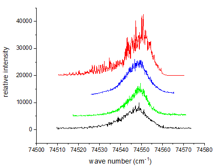
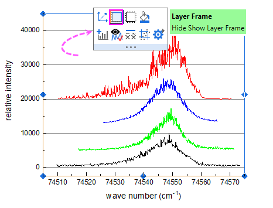

Hinweis: Dieses Tutorial ist mit dem Ordner Multi-line-plot with Special Position Annotation Line des Projekts "Tutorial Data" verbunden: <Origin EXE Folder>\Samples\Tutorial Data.opj.

Klicken Sie auf die untere X-Achse und tun Sie dasselbe, um den Stil der Achsenhilfsstriche festzulegen.
Für X (Horizontal): Von 74505 bis 74575;
für Y (Vertikal): Von -2500 bis 45000;


Klicken Sie dann auf eine beliebige Stelle außerhalb des Textfelds, um die Textbearbeitung zu verlassen, und ziehen Sie den Text an eine geeignete Position.
Das Textobjekt erhält jetzt die X-Koordinaten der Linie, wenn Sie das Linienobjekt horizontal ziehen. Auch der Text wird gleichzeitig aktualisiert.
Es gibt 2 Methoden, um Textbeschriftungen zu bearbeiten:
|